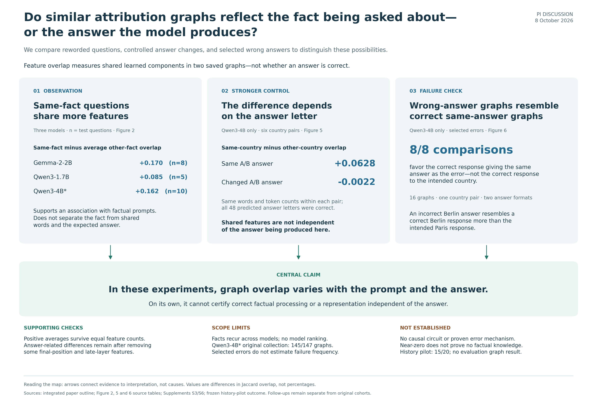

Updated 8 October 2026. This is a working paper for PI and collaborator review, not a peer-reviewed publication or a submission-ready release.
Do similar attribution graphs reflect the fact being asked about—or the answer the model produces?
In these experiments, graph overlap varies with the prompt and the produced answer. It cannot, by itself, establish correct factual processing or an answer-independent representation.

GitHub renders Markdown and PNGs directly. Download the folder to view the HTML galleries locally; GitHub does not render these HTML files as a hosted website.
The preferred option C includes the recorded failure prompt. It is retained as a clearly labeled layout alternative, not silently substituted into the main figure set. Its final promotion and caption reconciliation remain an author decision.
| Folder | Contents |
|---|---|
claims/ |
Current claims map and preferred Figure 1 layout, PNG and editable SVG |
figures/ |
Current six main figures, six supplements, captions, and local browser gallery |
tables/ |
Figure source tables and question-inclusion audit |
manuscript/ |
Working draft, integrated outline, findings summary, and sample accounting |
methods/ |
Relevant frozen protocols and supporting analysis notes |
code/ |
Selected analysis, figure, validation, and test source snapshots; dependency pins |
provenance/ |
File checksums, source mapping, and archived verification evidence |
The code snapshots preserve the original project-relative paths. They are for method inspection and use with the full authorized research archive; this compact folder does not reproduce the complete analysis by itself. Most original figure builders require saved analysis JSON files or raw graphs that are not redistributed here. The included CSV files support inspection of reported figure values, but do not replace the raw-data audit. No collection script has been run to prepare this package.
The archived 5 October same-machine reproduction passed 82 tests and
reconstructed the 23 original margins. That is historical verification,
not a new independent replication. Later figure wording checks are
documented separately. provenance/package_manifest.json
records checksums for this package;
provenance/link_audit.json records portable-link
checks.
To verify the downloaded files and headline arithmetic without
installing additional packages, run
python code/verify_package.py from this folder. This checks
file hashes and the included tables, not the excluded raw graphs.
Excluded: raw Neuronpedia graph exports, tokenizer/model files, private API configuration, credentials, downloaded reference PDFs, environments, caches, unrelated project changes, and the large local-only release archive. Their redistribution permissions are not established. The earlier compiled PDF is omitted because its figures and captions predate this revision. Links to the original writing-reference papers appear in the reference guide; their PDFs are not bundled.
Independent scientific review, author approval, reference verification, and venue formatting remain outstanding. This package makes no new license grant for third-party materials and does not authorize redistribution of the excluded archive.